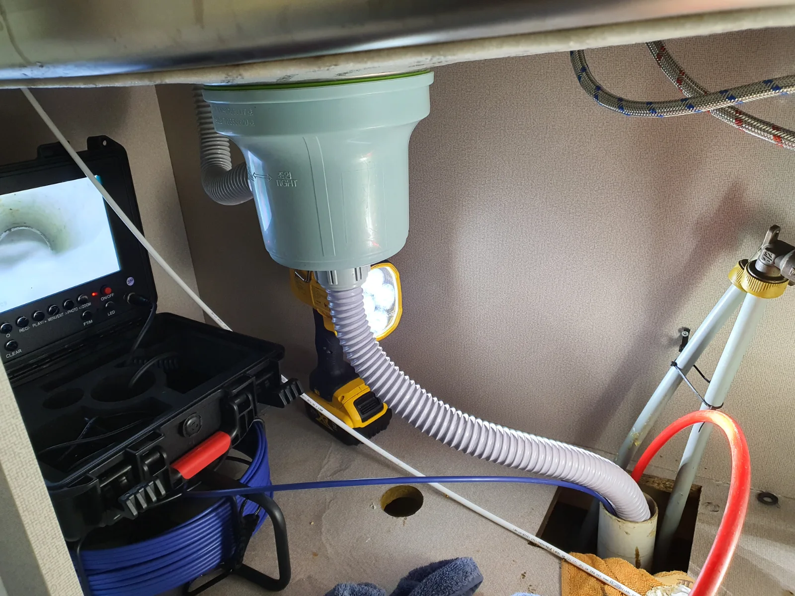
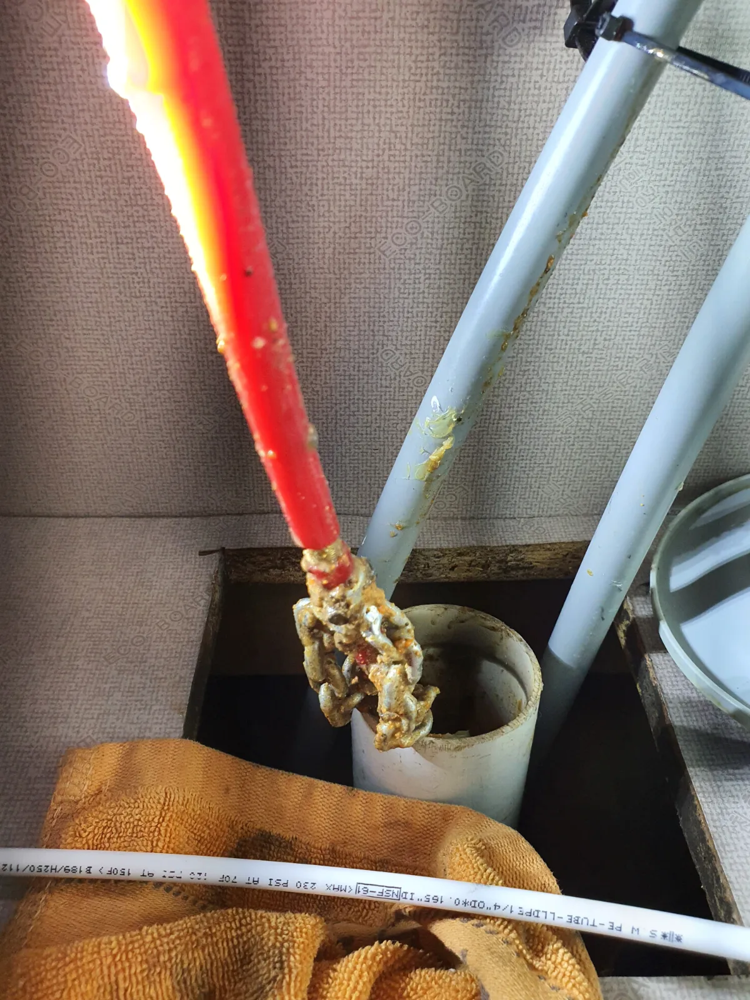

부평구 부평동 싱크대막힘, 현장 도착 후 진단
인천 부평구 부평동 싱크대막힘 요청을 받고 필요한 전문 장비를 준비해 현장으로 출동했습니다.
싱크대막힘은 음식물 찌꺼기뿐 아니라 배관 내부에 오랜 기간 쌓인 기름때와 슬러지성 오염물 때문에 배수 통로가 점차 좁아지면서 발생하기도 합니다. 겉으로 물이 조금씩 내려간다고 해서 배관 내부 상태까지 정상이라고 단정할 수 없는 이유입니다.
이번 현장에서는 배관 내시경을 먼저 투입해 내부 상태를 직접 확인했습니다. 내시경 화면을 통해 배관 내부의 오염 상태와 작업이 필요한 구간을 살펴본 뒤 어떤 작업이 필요한지 판단했습니다.
고객님께서는 처음에는 본 작업까지 진행해야 할지 망설이고 계셨습니다. 그래서 무조건 작업을 권하기보다 현재 배관 내부가 어떤 상태인지 직접 확인할 수 있도록 설명드리고, 왜 샤프트 작업이 필요한지 꼼꼼하게 안내했습니다.
현재 보이는 증상만 일시적으로 완화할 경우 배관 내부에 남아 있는 오염물로 인해 근시일 내 다시 막힘이 발생할 가능성이 있다는 점도 함께 설명드렸습니다. 실제 내시경 점검 결과를 바탕으로 작업 필요성을 충분히 이해하신 뒤 본 작업을 진행했습니다.
신라건축설비는 현장 상태를 확인하지 않은 채 큰 작업부터 권하지 않습니다. 먼저 상태를 점검하고 필요한 작업 범위와 방법, 비용에 영향을 주는 요소를 설명한 뒤 실제 필요한 범위에서 작업하는 것을 중요하게 생각합니다.
1단계: 증상 확인과 필요한 장비 작업
배관 내시경을 이용해 싱크대 하부 배관부터 내부 상태를 점검했습니다. 외부에서는 확인하기 어려운 배관 안쪽을 직접 살펴보면서 오염물이 어느 정도 누적돼 있는지와 작업이 필요한 구간을 확인했습니다.
점검 결과 단순히 입구 쪽만 관통해 일시적으로 물길을 만드는 방식보다 배관 내부에 누적된 오염물을 정리하는 작업이 필요한 상태였습니다.
이에 샤프트 장비를 투입해 배관 내부에 누적된 기름때와 슬러지성 오염물을 제거하는 배관스케일링 작업을 진행했습니다. 실제 작업 과정에서는 배관 내부에서 떨어져 나온 오염물이 샤프트 작업부에 묻어나오는 모습도 확인할 수 있었습니다.

2단계: 원인 구간 처리와 정상 작동 확인
샤프트 배관스케일링과 함께 석션 작업을 병행해 제거된 이물질과 오염물을 정리했습니다. 단순히 한 번 물길이 확보됐다고 작업을 끝내지 않고 배관 내시경을 다시 투입해 내부 상태를 확인하면서 필요한 구간을 점검했습니다.
고객님께서도 작업 과정을 지켜보시면서 처음 점검했을 때의 배관 내부 상태와 실제 작업 과정에서 제거되는 오염물을 확인하셨습니다.
처음에는 본 작업까지 진행해야 할지 고민하셨지만, 내시경 화면과 실제 제거되는 오염물, 작업 과정을 직접 확인한 뒤에는 **“정말 하기 잘했다”**는 피드백을 주셨습니다.
이번 부평동 싱크대막힘 현장은 단순히 큰 작업을 권해서 진행한 사례가 아닙니다. 배관 내시경이라는 객관적인 진단 수단을 이용해 현재 상태를 확인하고, 작업이 필요한 이유와 범위를 충분히 설명한 뒤 샤프트와 석션을 이용해 실제 배관 상태에 맞는 작업을 진행한 사례입니다.

작업 결과와 재발 방지 안내
인천 부평구 부평동 싱크대막힘 현장은 배관 내시경 점검부터 샤프트 배관스케일링, 석션 작업, 작업 후 내시경 재점검까지 단계적으로 진행했습니다.
싱크대 배관은 당장 물이 내려간다는 이유만으로 내부까지 깨끗하다고 볼 수 없습니다. 기름기가 많은 음식물이나 오염수가 반복적으로 유입되면 배관 벽면에 오염물이 누적되고, 시간이 지나면서 배수 공간이 좁아져 다시 싱크대막힘이나 역류 증상으로 이어질 수 있습니다.
재발 가능성을 줄이려면 음식물 찌꺼기와 기름 성분이 많은 내용물이 배관으로 그대로 유입되지 않도록 관리하는 것이 중요합니다. 배수가 이전보다 느려지거나 물이 고였다가 빠지는 증상이 반복된다면 완전히 막힐 때까지 기다리기보다 배관 상태를 점검하는 것이 도움이 됩니다.
신라건축설비는 단순히 막힌 곳을 관통하는 데 그치지 않고 배관 내시경을 활용해 실제 내부 상태를 확인한 뒤 현장에 필요한 경우 석션, 관통, 샤프트, 배관스케일링 등 적합한 방법을 선택합니다. 반대로 큰 작업이 필요하지 않은 현장이라면 불필요하게 작업 범위를 확대하지 않는 것도 중요하게 생각합니다.
작업 범위와 비용은 실제 배관 구조와 막힘 상태, 필요한 장비와 공법에 따라 달라질 수 있기 때문에 현장 점검 후 필요한 작업과 비용에 영향을 주는 요소를 설명하고 진행합니다.
작업 후에도 시공 부위와 관련해 이상 증상이 나타날 경우 기존 작업 내용을 바탕으로 상태를 확인하고 필요한 사후 대응을 진행합니다.
이번 부평동 현장처럼 싱크대막힘은 단순히 물길을 뚫는 것보다 현재 배관 상태를 정확하게 확인하고 어떤 작업이 필요한지 충분히 설명하는 과정이 중요합니다. 신라건축설비는 변기막힘·싱크대막힘·하수구막힘을 전문적으로 해결하며 서울·경기권뿐 아니라 인천 지역의 막힘 현장에도 대응하고 있습니다.
배관 내시경 진단을 바탕으로 석션, 관통, 샤프트, 배관스케일링 등 현장 원인에 맞는 공법을 선택하며, 더 심한 배관 오염에는 고압세척까지 적용할 수 있습니다. 점검 과정에서 공용배관이나 메인 오수관 문제, 배관 손상 등이 확인되는 경우에는 배관 보수·교체 및 대형 배관공사까지 연계해 자체 대응할 수 있습니다.
최종 조치: 배관 내시경으로 내부 상태와 작업 구간을 확인하고 샤프트를 이용한 배관스케일링으로 내부에 누적된 기름때와 슬러지성 오염물을 제거했습니다. 석션 작업을 병행하면서 배관 내부를 정리하고, 작업 후에는 내시경으로 내부 상태를 다시 확인했습니다.
현장 방문 전 확인하는 비용과 작업 범위
신라건축설비는 현장 증상과 배관 구조를 확인한 뒤 필요한 작업과 예상 비용을 안내합니다. 단순 관통으로 해결되는지, 배관내시경·석션·고압세척 또는 추가 장비가 필요한지는 현장 상태에 따라 달라집니다. 출장비와 야간 작업비, 추가 장비 비용이 발생할 수 있는 경우 작업 전에 먼저 설명하고 동의를 받은 범위에서 진행합니다.
업체를 선택할 때 확인할 사항
무조건적인 ‘0원’ 표현보다 실제 작업 범위, 추가 비용 조건, 사용 장비와 사후 대응 기준을 확인하는 것이 중요합니다. 해결되지 않았을 때의 비용 기준과 작업 후 동일 증상 발생 시 점검 범위를 사전에 문의해두면 불필요한 분쟁을 줄일 수 있습니다.
부평구 싱크대막힘 자주 묻는 질문
싱크대 물이 천천히 내려가면 바로 점검해야 하나요?
싱크대 배수가 원활하지 않아 점검을 요청한 현장입니다. 고객님께서는 본격적인 배관 작업까지 진행해야 할지 고민하고 계셨지만, 내시경을 통해 싱크대 배관 내부 상태를 확인한 결과 단순히 당장의 물길만 확보하는 것보다 내부에 누적된 오염물과 이물질을 정리하는 작업이 필요한 상태였습니다.처럼 증상이 나타나더라도 원인은 현장마다 다를 수 있습니다. 장비와 배관 구조를 확인한 뒤 필요한 작업 범위를 안내합니다.
작업 전 비용을 알 수 있나요?
작업 전 증상과 현장 여건을 확인해 예상 범위와 비용을 먼저 안내합니다. 변기 탈거, 장비 추가 투입 또는 공용배관 작업이 필요한 경우 고객 동의 없이 임의로 진행하지 않습니다.
약품으로 해결되지 않으면 어떻게 하나요?
완료 후 정상 작동을 함께 확인하고 작업 범위에 따른 사후 안내를 드립니다. 동일 증상이 반복되면 현장 기록을 기준으로 원인을 다시 점검합니다.
싱크대막힘 서울·경기 출동지역
신라건축설비는 부평구 부평동 현장을 포함해 서울 25개 구와 경기도 31개 시·군의 배관 문제를 상담합니다. 현장 거리와 기사 배정 상황에 따라 출동 가능 여부를 먼저 안내드립니다.
서울 전 지역
강남구 · 강동구 · 강북구 · 강서구 · 관악구 · 광진구 · 구로구 · 금천구 · 노원구 · 도봉구 · 동대문구 · 동작구 · 마포구 · 서대문구 · 서초구 · 성동구 · 성북구 · 송파구 · 양천구 · 영등포구 · 용산구 · 은평구 · 종로구 · 중구 · 중랑구
경기도 주요 출동지역
수원시 · 용인시 · 고양시 · 화성시 · 성남시 · 부천시 · 남양주시 · 안산시 · 평택시 · 안양시 · 시흥시 · 파주시 · 김포시 · 의정부시 · 광주시 · 하남시 · 광명시 · 군포시 · 양주시 · 오산시 · 이천시 · 안성시 · 구리시 · 의왕시 · 포천시 · 양평군 · 여주시 · 동두천시 · 과천시 · 가평군 · 연천군